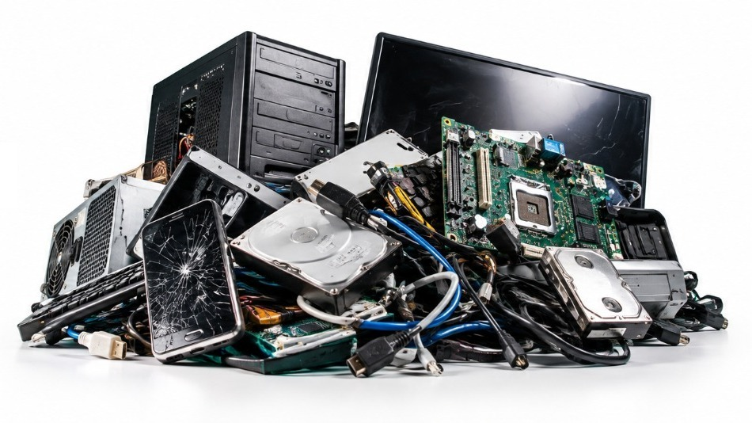
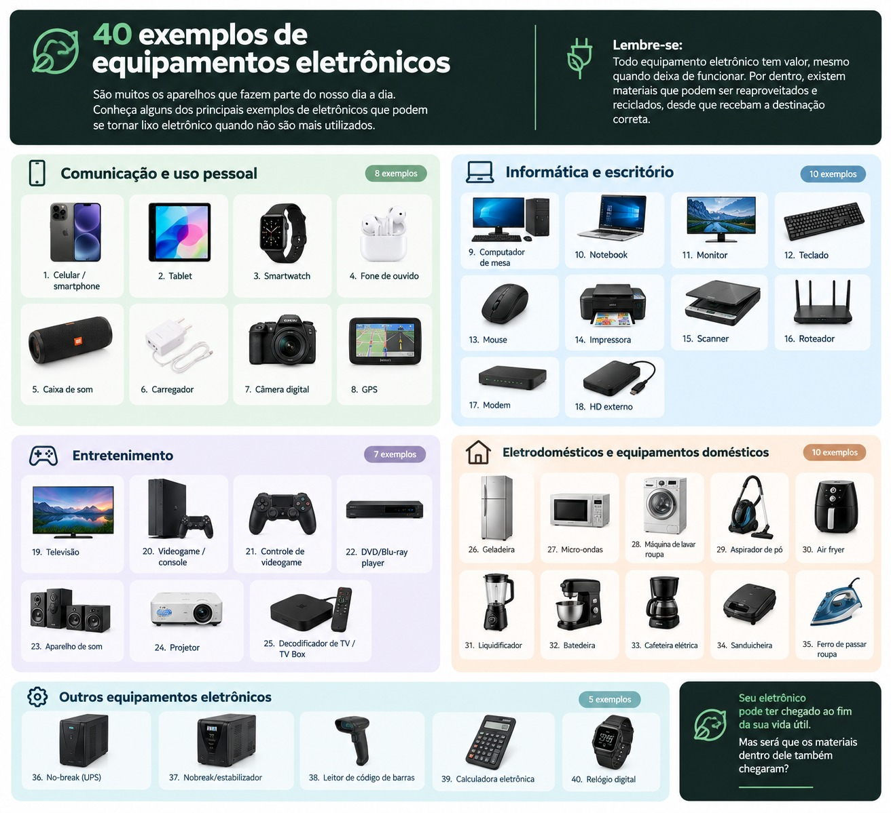
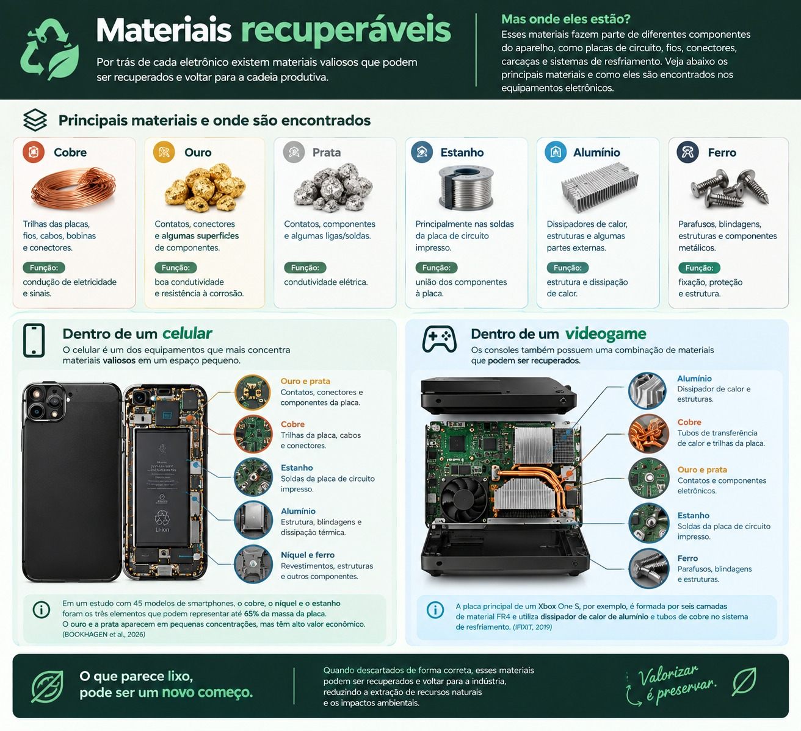
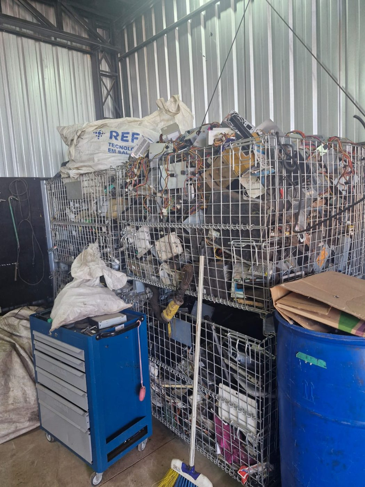
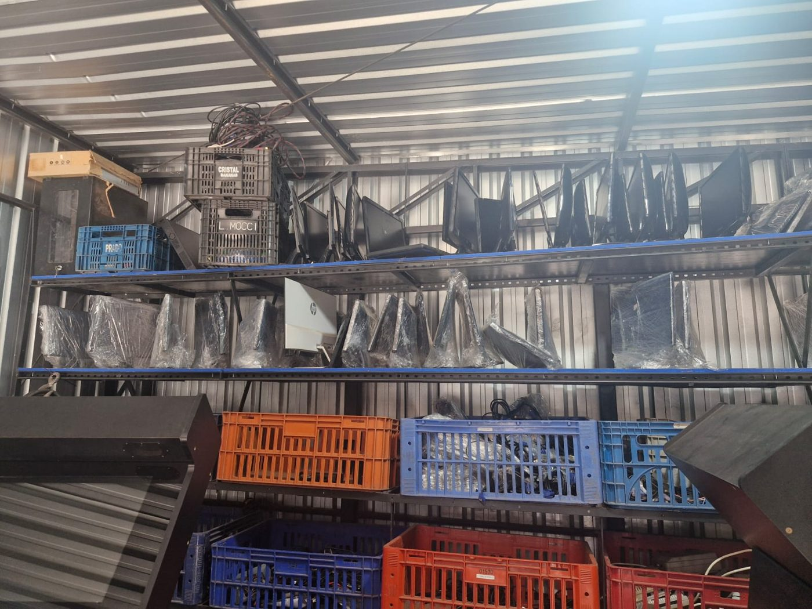
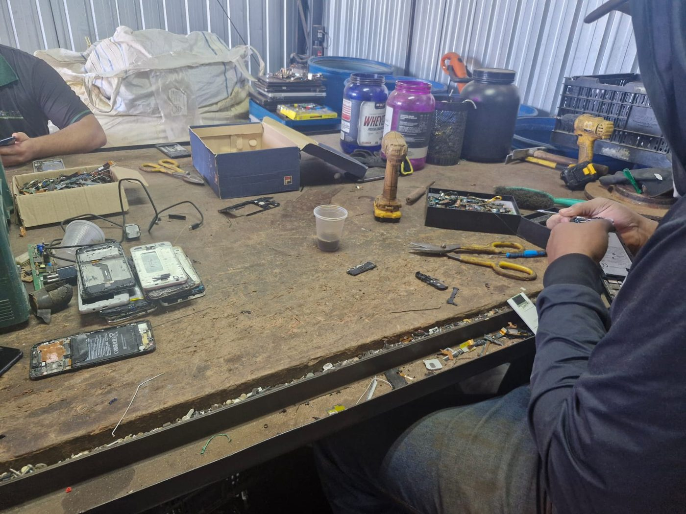
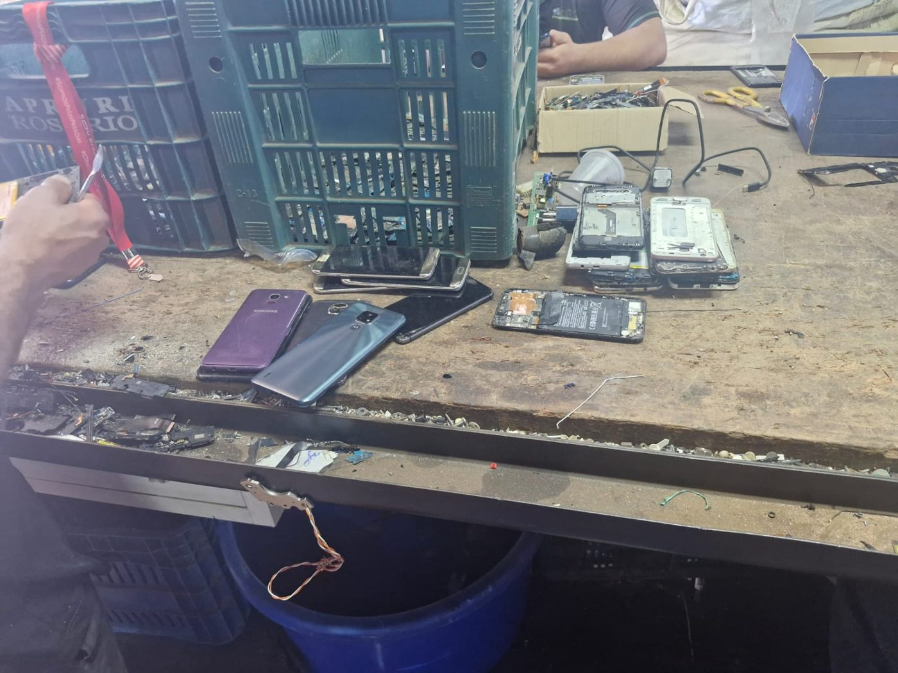
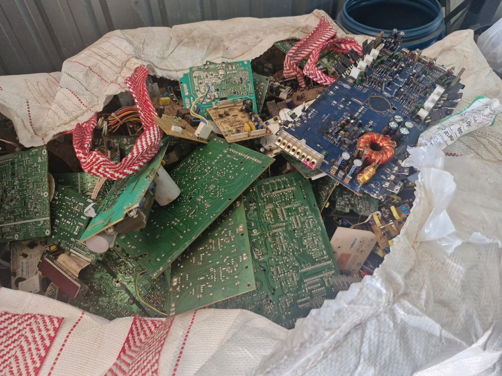
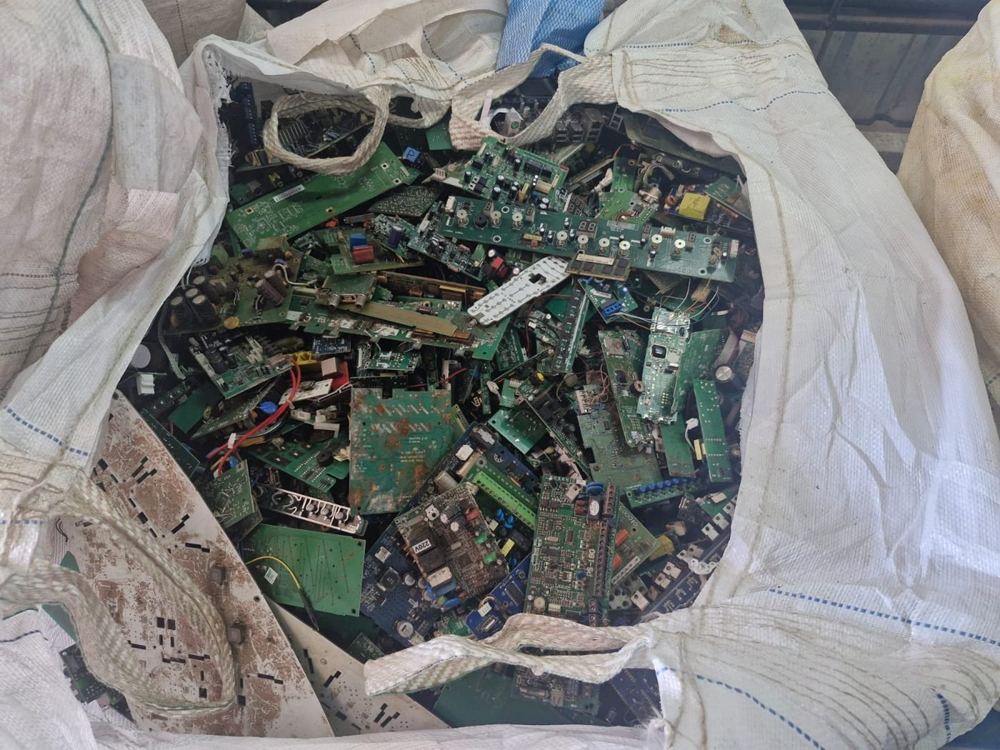

Beyond Collection | Projeto de conscientização
O Descarte não é o fim. É o início de uma nova possibilidade.
O que é
lixo eletrônico?
Entenda o que são, quais equipamentos entram nessa categoria e por que o descarte correto é importante.
Pontos de
descarte eletrônico
Encontre locais seguros e responsáveis para descartar seus equipamentos eletrônicos.
Conceito do Projeto Beyond Collection
O Beyond Collection nasceu para olhar além do momento do descarte. Um aparelho que deixou de ser utilizado não significa que perdeu todo o seu valor. Por trás de cada eletrônico existem materiais que podem seguir diferentes caminhos após a coleta, incluindo processos de separação, reaproveitamento e reciclagem.
Queremos mostrar o que normalmente não vemos: o caminho do eletrônico depois que ele sai das nossas mãos.
Mais do que falar sobre descarte, o Beyond Collection busca aproximar tecnologia, informação e responsabilidade ambiental, incentivando uma nova forma de enxergar aquilo que chamamos de “lixo eletrônico”.
Pontos de Coleta e Descarte Adequado
Disponibilização de informações sobre locais autorizados para entrega de resíduos eletroeletrônicos.
O que é
lixo eletrônico?
Lixo eletrônico é todo equipamento que utiliza eletricidade ou componentes eletrônicos e que chegou ao fim da sua vida útil, deixando de ser utilizado.

Por que devemos realizar o descarte adequado
Segundo o The Global E-waste Monitor 2024
O Brasil gerou aproximadamente 2,4 milhões de toneladas de resíduos eletroeletrônicos em 2022, colocando o país entre os maiores geradores desse tipo de resíduo no mundo.
A troca constante por novos modelos gera a mineração urbana adormecida — um grande estoque de aparelhos parados em gavetas.
Cresce mais rápido do que a reciclagem
O mundo gerou 62 milhões de toneladas de e-lixo em 2022. A geração cresce cerca de cinco vezes mais rápido do que a reciclagem formalmente documentada.
Do que ele é feito
Em média, um equipamento eletroeletrônico é formado por metais ferrosos e não ferrosos, plásticos, vidro e uma fração pequena de metais preciosos.
- Metais ferrosos: chassi, suportes, motores
- Metais não ferrosos: cobre, alumínio, estranho
- Metais preciosos: ouro, prata, paládio
- Plásticos e vidro: carcaças, telas, isolamento
Por que não pode ir para o lixo comum
Esses aparelhos carregam substâncias como chumbo, mercúrio, cádmio e retardantes de chama, que contaminam o solo e a água em aterros e lixões.
Equipamentos Eletroeletrônicos
Selecione uma categoria para consultar as orientações específicas de descarte.
Celulares e Telefonia
Celulares e smartphones possuem mineração urbana embutida: conectores folheados a ouro, trilhas de prata e cobre nas placas de circuito impresso. Antes do descarte, recomenda-se remover os cartões SIM e realizar a restauração para os padrões de fábrica.
Localizar Ponto para este ItemExemplos de Aparelhos Eletrônicos
Se tem tomada, pilha ou bateria, é lixo eletrônico. As categorias abaixo ajudam a identificar o que pode ser entregue nos pontos de coleta.

Linha marrom
TVs, monitores, caixas de som, aparelhos de som e videogames.
Linha branca
Geladeira, fogão elétrico, máquina de lavar, micro-ondas e ar-condicionado.
Linha verde
Celulares, notebooks, tablets, impressoras, roteadores e periféricos.
Linha azul
Liquidificador, batedeira, ventilador, secador e ferramentas elétricas.
O que acontece quando descartamos adequadamente
Acompanhe a jornada do material desde a entrega no ponto até a separação dos componentes.
Coleta
O aparelho é entregue em um ponto de coleta ou em uma ação da campanha.
Triagem
Os itens são separados por tipo e por porte: pequenos, médios e grandes.
Desmontagem
Placas, fiação, plásticos, baterias e carcaças são separados manualmente.
Recuperação
Os metais voltam à indústria como matéria-prima e os resíduos perigosos têm destino controlado.
Matérias Primas Recuperadas
Reciclar significa devolver esses metais à indústria sem precisar minerar de novo.

| Material | Função no equipamento | Exemplo: celular | Exemplo: máquina de lavar |
|---|---|---|---|
| Ouro Au | Conduz eletricidade sem oxidar. | Contatos da placa-mãe. | Contatos da placa de controle. |
| Cobre Cu | Principal condutor elétrico. | Trilhas da placa e motor vibratório. | Enrolamento do motor e fiação. |
| Prata Ag | Contatos elétricos e pastas condutivas. | Trilhas condutivas internas. | Contatos dos relés. |
| Estanho Sn | Liga de solda para componentes. | Solda dos componentes eletrônicos. | Solda da placa do painel. |
| Alumínio Al | Dissipador de calor e estrutura. | Carcaça e blindagem térmica. | Peças do motor e chassi. |
| Ferro Fe | Resistência mecânica. | Parafusos e suportes. | Chassi e tambor de aço. |
Galeria
Acompanhe as imagens das nossas ações de conscientização, do processo de triagem e recuperação.
Foto 01 - Recebimento

Foto 02 - Triagem

Foto 03 - Desmontagem

Foto 04 - Celulares

Foto 05 - Placas em geral

Foto 06 - BigBag

Fotos tiradas no Centro de coleta ReciTech
Nenhum aparelho termina quando para de funcionar.
Ele termina quando ninguém mais sabe o que fazer com ele. Equanto houver cobre nas trilhas, ouro nos contatos e ferro na estrutura, existe um proximo uso possivel. O Beyound Collection acredita que informação e oque separa uma gaveta cheia de materiais eletrônico de um retorno á industria e que descartar certo deveria ser tão simples quanto comprar.
-Beyound Collection